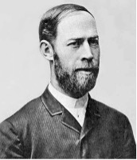

中
|
한
|
Eng
首页
|
微波
|
什么是微波?
特点和应用
微波技术
|
什么是微波技术?
为什么要学习微波技术？
微波技术的发展过程
天线
什么是天线?
天线的种类
微波技术的发展过程
微波技术发展的历史可以追溯到20世纪初乃至19世纪末。在第二次世界大战中，雷达的研制加速了微波技术的发展，是其称为一门独立的学科。微波技术的发展经历了一下几个重要阶段。

第一阶段：1940年前。
1888年，德国的物理学家赫兹通过实验验证了电磁波的存在。这通常被认为是宏观电磁场理论体系完备建立的标志。 1936年，美国贝尔研究所的研究人员通过实验证明空心金属管可以传输微波功率。这可以看作是近代微波技术产生的标志。 在此阶段，科学家发明了若干形式的微波电子管，是推动微波技术向前发展的决定性因素。在此阶段还开展了波导，空腔谐振器、微波电子管中电磁场和运动电荷相互作用等方面的理论研究，为微波技术的进一步发展奠定了理论基础。
第二阶段：1940年～1945年。
此阶段正处于第二次世界大战时期，研究的焦点是将雷达应用于军事。在美国，麻省理工学院（MIT）建立了著名的辐射实验室来发展雷达的理论和技术，很多著名的科学家在一起，把微波领域研究推进到一个迅猛发展的时期
第三阶段：约1945年以后。
①1944年至今，微波波普学和量子学的大发展。 ②1946～1971年，射电天文学的大发展。 ③1947年至今，微波能利用及微波医学的发展。 ④1964年成立国际通信卫星组织。 ⑤1965年以后，微波电路得一向固体化、小型化发展。
现在
1.向更高频率和更短波长过渡，即向毫米波和亚毫米波发展，以弥补厘米波段和激光波段的空白。 2.想微波电路的小型化、单片集成化方向发展，以及MMIC更广泛的应用。 3.想开辟更多、更新的微博应用领域方向发展。